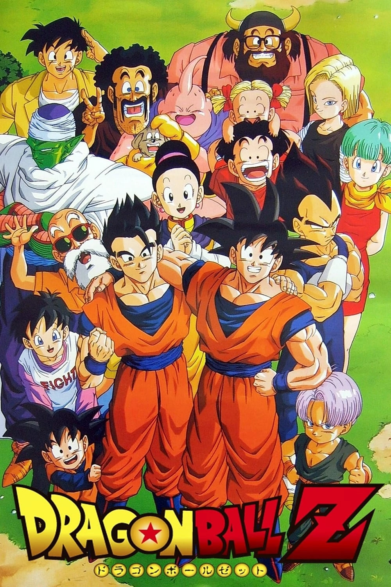

-
Dragon Ball
Dragon Ball Clássico é a obra que deu início a franquia de sucesso do mangaká, Akira Toriyama. Esta produção foi inspirada em uma antiga lenda chamada "Jornada para o Oeste". No início, Goku parte junto a Bulma em busca das Esferas do Dragão, onde acaba vivendo grandes aventuras.
-
Dragon Ball Z
Dragon Ball Z é uma das séries de anime mais reconhecidas, com um efeito cultural mundial bem mais de 30 anos depois de ter começado a ser exibida. A saga decorreu de 1989 a 1996 e foi um destaque dos últimos 326 capítulos da série. A história começa 5 anos após os eventos do Dragon Ball original.
-
Dragon Ball Super

Dragon Ball Super é um arco de anime e mangá da franquia criada pelo lendário Akira Toriyama. A trama tanto do anime como do mangá é uma sequência de Dragon Ball Z, oferecendo assim aos fãs uma continuação da história de Goku e amigos passados quase 18 anos das últimas aventuras.
-
Dragon Ball Gt

Dragon Ball GT tem início 5 anos após os acontecimentos de Dragon Ball Z, quando Goku parte com Uub (a reencarnação boa de Kid Buu) para que ambos treinem juntos.